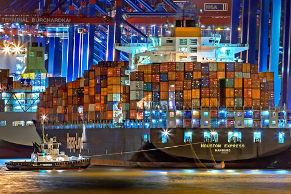

Transport
Profesionalna usluga organizacije transporta kompletirana je uslugama:
- Preuzimanje / dostava pošiljke
- Pakovanje i stručni saveti u vezi pakovanja
- Inspekcijski pregledi i carinsko posredovanje
Na ovaj način Vaše pošiljke se, uz minimum Vašeg angažovanja, i bukvalno kreću "od vrata do vrata"
Veliki broj svih naših različitih usluga transporta i distribucije. Prepoznajte vaše rešenje!
 DRUMSKI
TRANSPORT
Drumski
transport robe organizujemo na celoj teritoriji Evrope i šire, dok za dalje
destinacije preporučujemo kombinovani transport robe, bilo da se radi o vodenom,
železničkom ili avio transportu robe. Drumski transport robe ujedno spada u najčešće
usluge transporta koje pružamo našim klijentima.
DRUMSKI
TRANSPORT
Drumski
transport robe organizujemo na celoj teritoriji Evrope i šire, dok za dalje
destinacije preporučujemo kombinovani transport robe, bilo da se radi o vodenom,
železničkom ili avio transportu robe. Drumski transport robe ujedno spada u najčešće
usluge transporta koje pružamo našim klijentima.
- Puni ili delimični kamionski utovari
- Zbirne kamionske pošiljke

VODENI
TRANSPORT
Efikasan
transport robe vodenim saobraćajem iziskuje uključenje i drugih vidova saobraćaja.
Pored pouzdane, efikasne i kvalitetne usluge transporta robe vodenim saobraćajem,
ujedno Vam nudimo i pronalaženje adekvatne rute kako bi se određena količina robe
transportovala od mesta utovara do krajnje destinacije.
Nudimo najpovoljnije transportno rešenje za prekomorski i rečni transport većih
pošiljki kako generalnih, rasutih, tako i tečnih tereta do i iz svih pomorskih i
rečnih luka prema najpovoljnijim tržišnim uslovima uz:
- Obezbeđenje adekvatnog tovarnog prostora na tržištu
- Koordinaciju i sinhronizaciju rada svih učesnika u prevozu
 AVIO
TRANSPORT
Sve
je veći broj zahteva naših klijenata za transportom robe avio saobraćajem, imajući u
vidu njegovu ekonomičnost i brzinu. U zavisnosti od destinacije i same količine robe
koju trasnportujete, nudimo vam kvalitetnu uslugu odabira najpovoljnijeg avio
prevoznika, kao I najbrže rute za transport robe. . Bez obzira na vašu lokaciju i
izbor aerodroma do kog je potrebno transportovati vašu robu, naša kompanija vam
stoji na usluzi 24h. Dostupni smo za vas svih sedam dana u nedelji i fleksibilni za
sve vrste dogovora. Cilj nam je da ispunimo sve vaše zahteve i sa ponosom vas dodamo
na listu naših zadovoljnih klijenata.
AVIO
TRANSPORT
Sve
je veći broj zahteva naših klijenata za transportom robe avio saobraćajem, imajući u
vidu njegovu ekonomičnost i brzinu. U zavisnosti od destinacije i same količine robe
koju trasnportujete, nudimo vam kvalitetnu uslugu odabira najpovoljnijeg avio
prevoznika, kao I najbrže rute za transport robe. . Bez obzira na vašu lokaciju i
izbor aerodroma do kog je potrebno transportovati vašu robu, naša kompanija vam
stoji na usluzi 24h. Dostupni smo za vas svih sedam dana u nedelji i fleksibilni za
sve vrste dogovora. Cilj nam je da ispunimo sve vaše zahteve i sa ponosom vas dodamo
na listu naših zadovoljnih klijenata.
 ŽELEZNIČKI
TRANSPORT
Nekada, organizacija transporta robe podrazumeva uključenje i drugih vidova
saobraćaja a sve u cilju brzog i efikasnog transporta robe. Nudimo vam pouzdanu,
efikasnu i kvalitetnu uslugu transporta robe železnicom i pronalaženje adekvatne
rute kako bise određena količina robe transportovala od mesta utovara do krajnje
destinacije. Železnički transport robe spada u red najekonomičnijih vidova
transporta. Ukoliko ste se odlučili da se vaša roba transportuje železnicom, naša
kompanija vam stoji na raspolaganju za svu logističku podršku.
ŽELEZNIČKI
TRANSPORT
Nekada, organizacija transporta robe podrazumeva uključenje i drugih vidova
saobraćaja a sve u cilju brzog i efikasnog transporta robe. Nudimo vam pouzdanu,
efikasnu i kvalitetnu uslugu transporta robe železnicom i pronalaženje adekvatne
rute kako bise određena količina robe transportovala od mesta utovara do krajnje
destinacije. Železnički transport robe spada u red najekonomičnijih vidova
transporta. Ukoliko ste se odlučili da se vaša roba transportuje železnicom, naša
kompanija vam stoji na raspolaganju za svu logističku podršku.